Fincas Productivas
Fincas Productivas
Semana 1 · Clase en vivo
El bosque como modelo
Los 7 principios de inmunidad del bosque, llevados al diseño de tu finca.
Iván Castrillón · Miércoles 30 de septiembre de 2026
La ruta de esta noche
Hoy
- 1¿Quién está aquí?
- 2El mundo que nos tocó
- 3El método: los 7 principios de inmunidad del bosque
- 4Tu primera tarea
- 5Preguntas y casos
Las reglas del juego
Cómo funciona el curso
Incluye 12 meses de comunidad La Huerta LAB. Un acceso sirve para la pareja o la familia.
Escribe en el chat
¿Quién está aquí?
- País y ciudad
- ¿Ya tienes finca o la estás buscando? ¿Cuántas hectáreas?
- ¿Qué te trajo al curso?
Parte 1
El mundo que nos tocó
Bosques · Residuos · Calor · Campo
Bosques
Y se siguen cortando más de 15 mil millones de árboles cada año.
Crowther et al. (2015), Mapping tree density at a global scale, Nature 525. Alcance: mundial.
Bosques
La mitad de esa pérdida ocurrió en el último siglo. Lo que tardó 10.000 años en la primera mitad, lo hicimos en 100.
Our World in Data (Ritchie, 2021), con base en FAO. Alcance: mundial, desde hace ~10.000 años.
Bosques · Colombia
El motor principal hoy es la praderización para ganadería y la colonización de tierras.
IDEAM, Sistema de Monitoreo de Bosques y Carbono, cifra anual 2025 (publicada el 31 de julio de 2026). Alcance: nacional.
Residuos
de residuos sólidos municipales al año. Casi el doble en una generación.
PNUMA, Global Waste Management Outlook 2024. Alcance: mundial, residuos sólidos municipales.
Residuos · Comida
La pérdida y el desperdicio de alimentos generan entre 8 % y 10 % de las emisiones de gases de efecto invernadero del mundo.
PNUMA, Food Waste Index Report 2024. Alcance: mundial; hogares, servicios de comida y comercio.
Calor
El clima ya cambió
Frente al nivel preindustrial (1850–1900). El calentamiento de largo plazo va en torno a +1,4 °C; la meta de París se mide en décadas.
Copernicus C3S / ECMWF, Global Climate Highlights 2025 (enero de 2026), datos ERA5. Alcance: mundial.
Campo · Colombia
de las personas viven en pobreza multidimensional. En el campo es 3,6 veces más.
Y el 30,7 % de los hogares rurales no tiene una fuente de agua mejorada.
DANE, Pobreza multidimensional 2025 (abril de 2026). Alcance: nacional, sin la ruralidad de Amazonía–Orinoquía.
Parte 2
La vida que nos tocó
Campo vacío · Comida · Estrés
Campo vacío · Colombia
De cada 10 colombianos, 7 vivían en el campo. Hoy, poco más de 2.
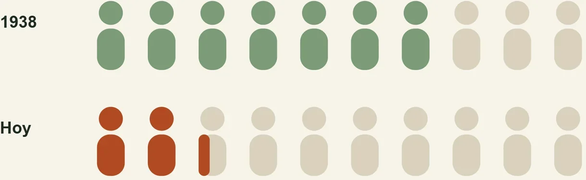
DANE, citado por AgroNET – Ministerio de Agricultura (octubre de 2025). Alcance: nacional.
Comida · América Latina y el Caribe
El hambre viene bajando, pero comer bien sigue siendo caro y la obesidad sigue subiendo.
FAO, FIDA, OPS, PMA y UNICEF, Panorama Regional de la Seguridad Alimentaria y la Nutrición 2025 (febrero de 2026). Alcance: ALC.
Lo que comemos
Están desplazando las comidas de siempre, las que se cocinaban con alimentos frescos.
Monteiro et al. (2025), The Lancet, serie Ultra-Processed Foods and Human Health. Alcance: mundial.
Estrés
Tráfico, pantalla, horarios. El estrés se volvió estilo de vida.
Gallup, State of the Global Workplace 2026 (datos de 2025). Alcance: mundial, personas empleadas.
Campo
Y en tu zona nadie cree que se pueda producir sin químicos.
A veces ni el contratista que te trabaja.
Vivir en el campo.
Vivir del campo.
Comida sana para tu familia, otro ritmo de vida y una finca que deje de costar plata.
Todo esto tiene algo en común: la forma en que producimos comida.
Hay un sistema que lleva millones de años sin ninguno de los cuatro.
Nadie lo fertiliza. Nadie lo fumiga. No bota basura.
¿Qué hace el bosque que nosotros no?
Parte 3
El método
Los 7 principios de inmunidad del bosque.
La paradoja del bosque
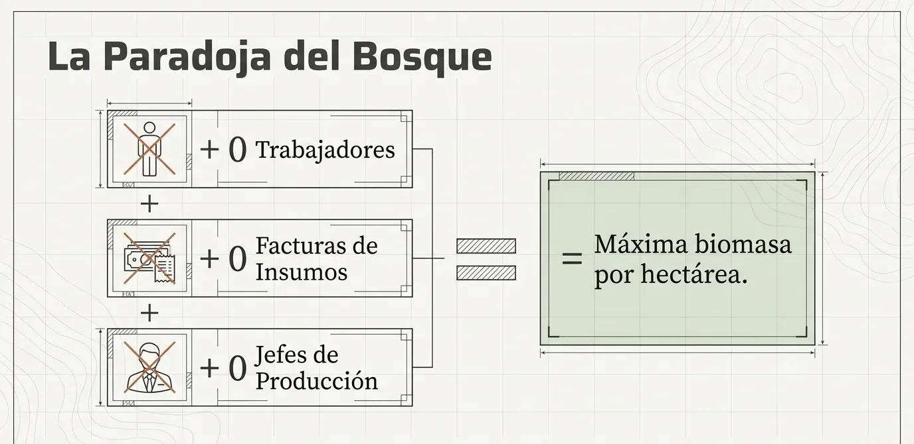
La falla del modelo convencional
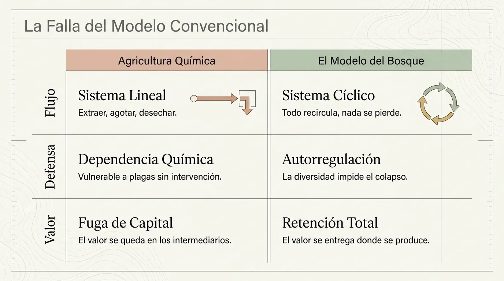
El método completo
Los 7 principios de inmunidad del bosque
Principio 1 · 7
Principio 1 · Microclima
Siembra tu propio clima
Un solo principio: del clima del planeta al clima de tu lote, y de ahí a tu comprador. Lo vemos completo la próxima semana.
Principio 1 · 7
Principio 1 · Microclima
Cortar la cadena
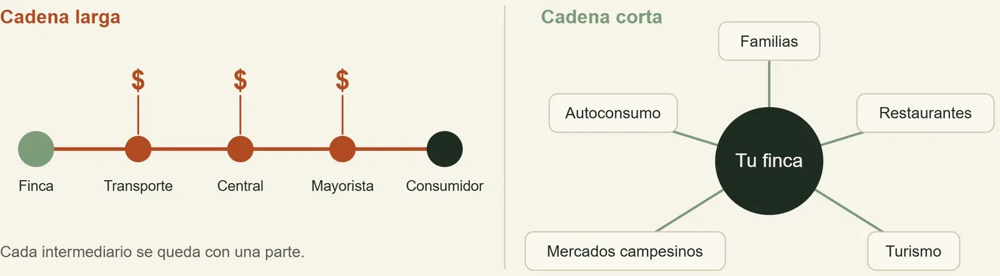
El bosque no paga fletes ni comisiones: su valor se queda donde se produce.
Principio 2 · 7
Principio 2 · Microorganismos
El bosque es el donante
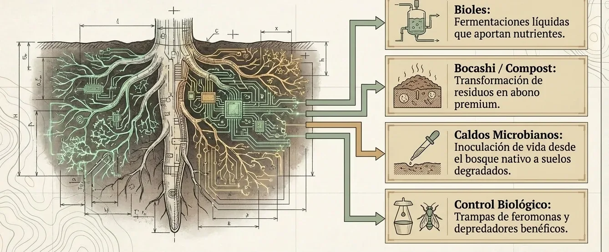
Pagar por insumos es pagar por una función que la vida de tu suelo puede hacer gratis.
Principio 3 · 7
Principio 3 · Reciclaje de nutrientes
La planta no come tres elementos
La tabla completa está en el suelo del bosque.
Principio 3 · 7
Principio 3 · Reciclaje de nutrientes
No nutrimos plantas: nutrimos suelo
Materia orgánica, microorganismos y minerales: la planta pide, el suelo entrega. Las harinas de roca liberan potasio, calcio, magnesio y silicio despacio, y funcionan mejor en suelos tropicales lavados.
Marschner's Mineral Nutrition of Plants, 4.ª ed. (2023) · Frontiers in Chemistry, editorial sobre elementos traza (2022) · Swoboda et al. (2022), Sci. Total Environ. 807, revisión de 48 ensayos.
Principio 3 · 7
Principio 3 · Trofobiosis
Sobre una planta equilibrada, la plaga muere de hambre.
Por eso el químico crea el círculo vicioso: cada aplicación debilita la planta y llama a la siguiente plaga.
Francis Chaboussou (1985), Healthy Crops: A New Agricultural Revolution; ed. en español divulgada por Jairo Restrepo. Teoría con respaldo parcial en la literatura.
Principio 4 · 7
Principio 4 · Diversidad
Qué sembrar, cuánto y cada cuándo
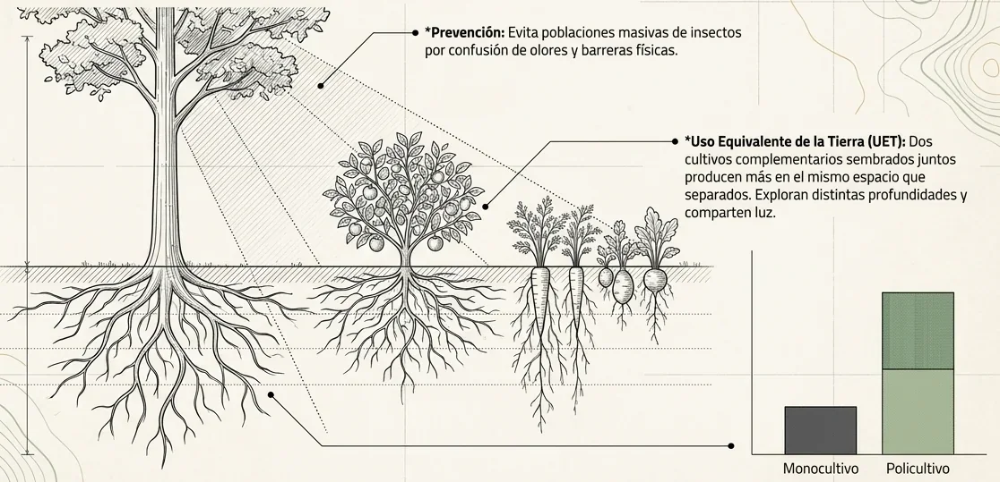
Principio 4 · 7
Principio 4 · Diversidad
La venta directa exige diversidad
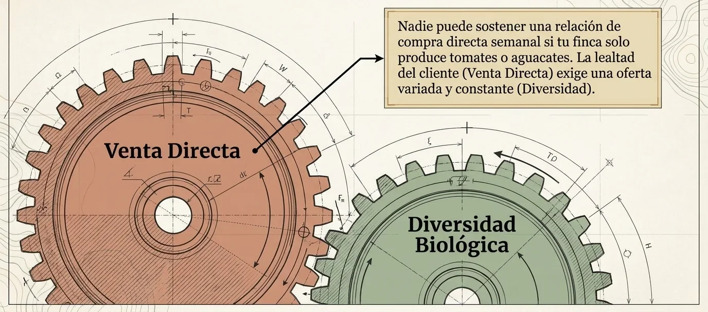
Principio 5 · 7
Principio 5 · Agua
Las plantas beben, no comen
Suelo desnudo: el agua se va
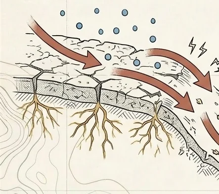
Suelo esponja: el agua se queda
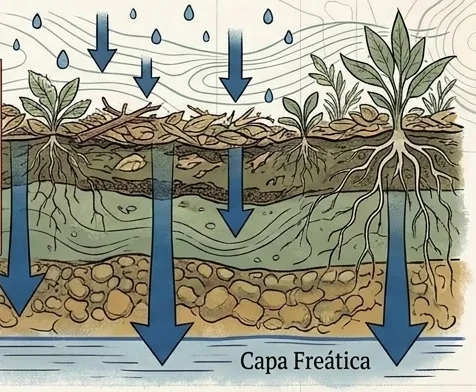
Curvas de nivel, key point, terrazas y zanjas de infiltración: que el agua que cae se quede en tu lote.
Principio 5 · 7
Principio 5 · Agua
Lo que dicen los números
La materia orgánica sola retiene menos de lo que se dice. El efecto grande está en la cobertura y las raíces vivas: el agua entra y se queda en tu lote.
Basche & DeLonge (2019), PLOS ONE, metaanálisis de 89 estudios · Minasny & McBratney (2018), Eur. J. Soil Sci. 69, metaanálisis de 60 estudios. Alcance: mundial.
Principio 6 · 7
Principio 6 · Energía
Cada vuelta que da la energía es plata que no sale
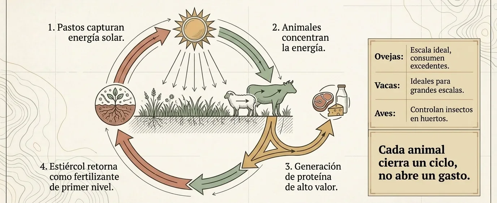
Principio 7 · 7
Principio 7 · Descanso
Parar a tiempo también es producir
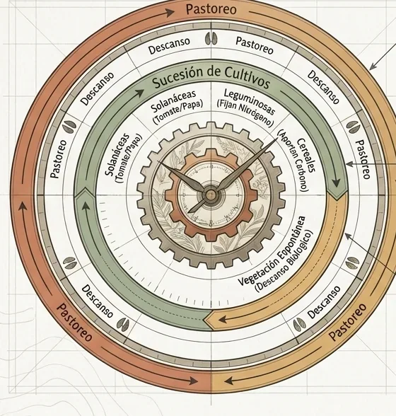
Los 7 principios juntos
Un solo sistema
No son recetas sueltas. El bosque las tiene funcionando juntas desde hace millones de años.
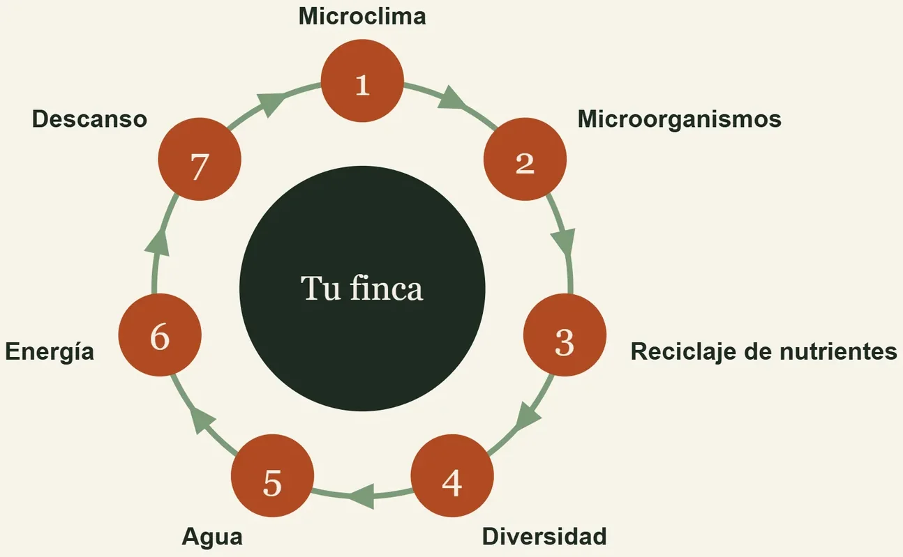
Los 5 pilares de una finca sin improvisar
Los pilares son la decisión. Los principios son el método.
El recorrido completo
Las 8 semanas
Miércoles, 6:00 p.m. hora Colombia · Todo queda grabado en Skool.
Tarea · Semana 1
La ficha de mi finca
- Dónde queda y a qué altura
- Área total
- Qué hay hoy: bosque, agua, pasto, cultivos, animales
- Qué compras de afuera
- A quién le podrías vender
Publícala en Skool con una foto antes del miércoles 7 de octubre. Con estas fichas vamos armando el diseño de tu finca a lo largo del curso.
Antes del próximo encuentro
Lo que viene
Fincas Productivas
Preguntas y casos
Cuéntanos tu finca.